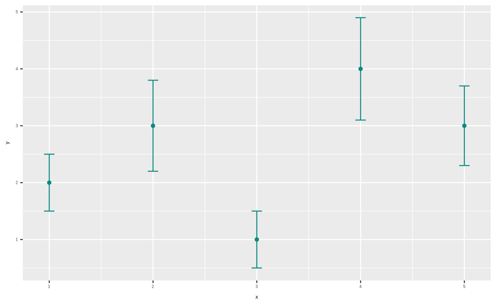
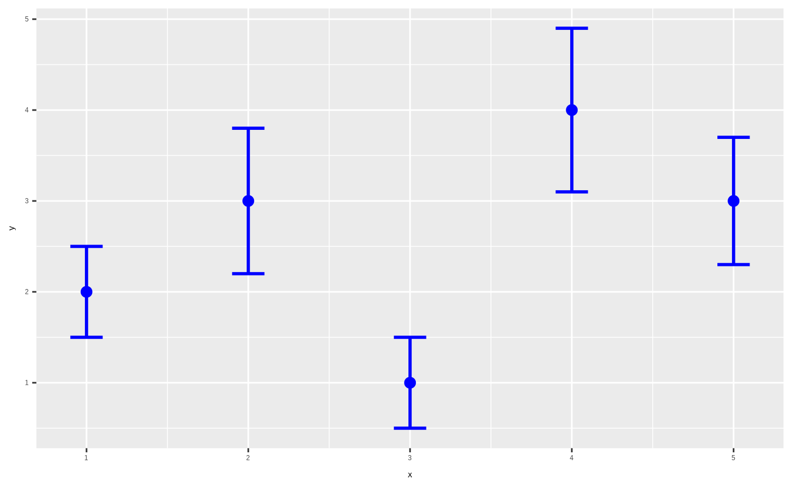

This geom combines the functionality of geom_point() and geom_errorbar(), drawing error bars behind points with separate control over their parameters.
Usage
geom_pointbar(
mapping = NULL,
data = NULL,
stat = "identity",
position = "identity",
...,
point.size = NULL,
errorbar.width = 0.1,
errorbar.linewidth = 0.5,
na.rm = FALSE,
show.legend = NA,
inherit.aes = TRUE
)Arguments
- mapping
Set of aesthetic mappings created by aes(). Supports all aesthetics from both geom_point and geom_errorbar.
- data
The data to be displayed in this layer
- stat
The statistical transformation to use on the data
- position
Position adjustment
- ...
Other arguments passed on to layer()
- point.size
Size for points (overrides size aesthetic for points only)
- errorbar.width
Width of error bar caps
- errorbar.linewidth
Line width for error bars
- na.rm
If FALSE, the default, missing values are removed with a warning. If TRUE, missing values are silently removed.
- show.legend
logical. Should this layer be included in the legends?
- inherit.aes
If FALSE, overrides the default aesthetics
Aesthetics
geom_pointbar() understands the following aesthetics (required aesthetics are in bold):
x
y
ymin (for error bars)
ymax (for error bars)
alpha
colour
fill
group
shape (points only)
size (points only, use point.size parameter for override)
stroke (points only)
linetype (error bars only)
Examples
library(ggplot2)
# Basic usage
df <- data.frame(
x = 1:5,
y = c(2, 3, 1, 4, 3),
ymin = c(1.5, 2.2, 0.5, 3.1, 2.3),
ymax = c(2.5, 3.8, 1.5, 4.9, 3.7)
)
ggplot(df, aes(x = x, y = y, ymin = ymin, ymax = ymax)) +
geom_pointbar()

# With custom styling
ggplot(df, aes(x = x, y = y, ymin = ymin, ymax = ymax)) +
geom_pointbar(
point.size = 3,
errorbar.width = 0.2,
colour = "blue",
errorbar.linewidth = 1
)
